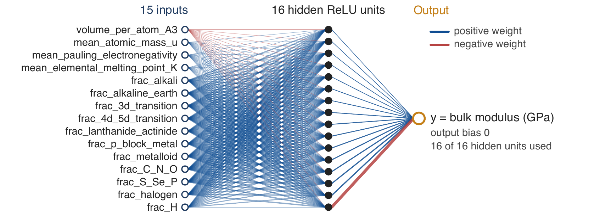

MATERIALS SCIENCE & ENGINEERING
TEXAS A&M UNIVERSITY
Department of Materials Science and Engineering
65

The model's own account (self-report)
A single-index model: every hidden unit computes the same linear estimate z of ln(B), from a constant per composition class (about 4.0 for H up to 6.95 for C, N, O) + 0.00035 Tm + 0.3 χ + 0.002 mass − 0.08 V − 1.45. The 16 units differ only in bias, as knots of a piecewise-linear exp(z) between 1 and 360 GPa.
Opus 5.5, reply 1 of 3
273 weights, no data
16 of 16 hidden units used
ρ alone: 0.95 (3 replies)
rule 1 / volume: 0.88